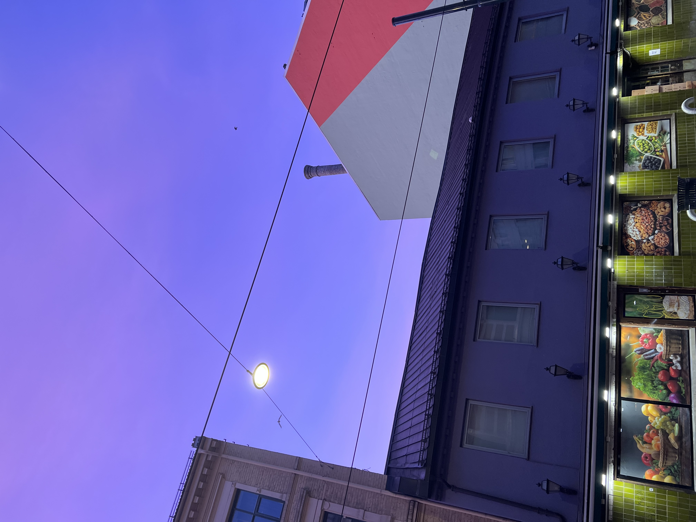

Hei og velkommen! I've always wanted a terrible html website (à la Space Jam and the Heaven's Gate cult - two things commonly referred
to in the same sentence) and so here's my attempt to document my year abroad in Norway. Enjoy :D
Two months I’d been in Norway, but I’d never felt more like just another tourist. This past week, I had the chance to explore the fjords of Flåm (the
Norwegian å is pronounced most like the oa in boat - so pronounced like floam), and waiting in line for the final leg of the journey in the train
station, nearly every other person was American. One couple identified my Royals hat and introduced themselves as from Iowa, while a few feet
back a man stood in New York Giants gear. This was not the place to spot Vålerenga hockey jerseys. Ahead of me, the person behind the counter of
the station’s small cafe, selling what else to American tourists but hotdogs, defaulted to English at the beginning of each transaction. I felt
some need to distinguish myself in some way, to prove what Norwegian mettle I’d gathered in the past couple months, but it wasn’t going to be to
much avail. This scenery was just as new to me as it was to the rest of the room.
Back during one of my first weeks in Norway, my roommate Sebastian and I hiked up in the Holmenkollen neighborhood of Oslo, a scenic mountain area
that is best known by the massive ski jump ramp that juts out from the cliff and is visible from large chunks of the city. As we took the subway
back down into sentrum (the Norwegian word for the city center), I found myself glued to the window watching us descend over the vast spread of
houses, lakes, and open fields that dotted the valleys of the Oslo fjord. I made some comment about the view to Sebastian, and he looked up to
peek outside the window at what I was watching. “Oh yeah it looks about normal”, he replied.
|
|
| The ski jump ramp, one of the wilder Norwegian sports traditions | Said "normal" view |
This was about more of the same. As our train descended from Myrdal down into Flåm, a harrowing journey along the steepest railway in Northern Europe
(a vague geographical region maybe but still cool), I was entranced by the many rapidly changing landscapes: shining snowcapped mountaintops - in
mid October no less, stunning river valleys, and orange and crimson forests that shielded the intensity of the 1000 meter drop beneath us. Each
turn of the train gave a new, equally exciting, configuration of the elements and the hour-long journey disappeared in an instant. That was, save
for a genuinely bizarre train stop to watch a woman in a dress dance along a waterfall (Huldra the forest spirit, with accompanying merch at the
gift shop below! Norway is learning from the American school of promotional tie-ins).
Equally fascinating to me as the scenery was the Norwegian - likely one of very few on the train besides the train staff - sitting opposite from my
seat that seemed to be leading some sort of biking tour. While many on the train oohed and aahed at the spectacular views, myself going as far to
take advantage of empty seats and switch sides of the train to whatever was most interesting at the moment, the guide sat peacefully back in her
seat and didn’t join in craning her neck to see each passing vista. Though she had certainly been on the train ride dozens of times before, the
idea of such a world-renowned site being routine viewing still interests me, and has brought me to reflect again on what I previously mentioned
had become routine for me in Oslo. Not that I could fully blame here for skipping the waterfall dance routine stop though. It has, though, made
me wonder how different my first desert sunset will look back in December nearly six months removed from Phoenix for the first time in a decade.
It will be a special feeling to take in the cacti and mountains of Phoenix with fresh eyes once again.
 |
 |
|
| Snow very present getting on the train to Flåm | Waterfall! ft. Huldra | Another waterfall (casual) out the window |
The sensation of being in tourist country only continued in the town of Flåm itself. Though Oslo is inarguably a big city, and one as a tourist
that’s worth seeing at least for a couple days (so come visit), it’s hardly a tourist hotspot when it comes to Norway as a whole. Many of the
primary draws in the city are either not as unique compared to other countries (like some of the art museums - though The Scream is worth the
hype) or not specifically unique to Oslo within Norway (such as some of the outdoor activities). Many of these attractions in Oslo also just
appeal to locals as well, meaning that usually when I’m out doing something new, I’m still surrounded by Norwegians. Flåm though is only a short
train ride from the tourist hotspot of Bergen, and also is a cruise ship stop for people traveling up the coast of Norway, as I learned when the
town briefly became inundated with camera-wielding Germans de-boating for an afternoon. All this is to say in any given store I was subjected to
viking hats, viking magnets, viking shirts, and also a large collection of wooden troll type figures?? All these were things I’d seen little to
none of in Oslo. Many stores also sold moose and whale jerky, “Norwegian specialties” much in the way that Phoenicians have a steady diet of
scorpion lollipops and cactus fruit jelly.
 |
|
| Fall very alive in Flåm | And the view later from our fjord cruise |
Having built up my own perceptions of the country the last couple months, seeing it juxtaposed with the experience of stopping by for a weekend
really deepened my appreciation for getting to immerse myself in the country for such a long period of time. Not that there’s anything wrong with
a weekend in Flåm though - the fjord and accompanying cruise and waterfalls truly were unlike anything I’d seen before, and my week as a whole is
deserving of its own post. Norway is a special place, and is somewhere I’m more than happy to see with the fresh eyes of a tourist.
Update: I’m still in Norway! Yesterday marked seven weeks I’ve been in Oslo, and as I approach the halfway point of my first semester here, it’s hit
me how quick things that were so foreign just a few weeks ago have become routine. My first week, grocery shopping was an onerous task, but now I
breeze through it like I’m back at the Tempe Trader Joe’s, even though I still can’t read most of the labels. Slowly, I’m building up a sense of
intuition about where I can expect to find different items and what places I should visit. For groceries, that means deciding between my local
chains (Kiwi and Rema 1000 for those deeply invested in the Norwegian grocery scene), or a more local store like the Persian family-run grocer
that sits directly across the street from my apartment. Interestingly, this distinction is actually fairly important for some items - the major
chains in Norway recently got heavily fined through a pretty major price fixing scandal, and despite this, the prices for some items like produce
remain abnormally high at those places. For many people, this has brought about a turn towards local stores, which is why I find myself
navigating the cramped quarters of the produce room (always with a different selection of vegetables in stock) to find such delicacies like bell
peppers and zucchini. I also think with many of the products having labels in Farsi or some other language, there’s a level of comfort I feel in
an environment where almost every other person is also operating outside of their native tongue.
In addition to a selection of Middle Eastern snacks, the store also randomly enough holds a bizarre collection of different American snacks foods. In
a country that does not regularly sell the normal flavors for ANY of these items, my local grocer always has a stash of lime diet coke, cherry
Dr. Pepper, and ranch takis for sale. The lime diet coke is particularly appreciated because for the time being I don’t plan on jumping on the
Norwegian pepsi max bandwagon.
|  | |
| Sunrise over my grocery store | Signs of the holiday season, now up along the river bed |
In other ways I’ve grown my Scandinavian sixth sense, I know when to check Ikea for home goods and when to instead go to Jysk (their Danish furniture
rival), and I’ve also adjusted to giving rough approximations of the weather in Celsius. I do still hold firm though that Fahrenheit’s the better
scale for temperature in general. 100 degrees meaning hot and 0 degrees is incredibly straightforward! I still have to sit and think about how
much of a weather difference is insinuated when I see the temperature moving from 7 Celsius to 10 since it all sounds more or less the same.
Adjusting to other metric measures, like distance in kilometers, admittedly makes a lot more sense even if it doesn’t completely come naturally.
Other systems, like calculating prices in Norwegian Kroner, have come a little slower, if only because 10 NOK are almost exactly $1 which makes
just moving a decimal point and trying to figure out the US equivalent easy, although imprecise. Either way, I can confidently say that 100 NOK
for a beer, the going rate at most bars in Oslo, is pretty bad in any currency.
Despite some things feeling more routine, there still have been plenty of new traditions I’ve gotten to experience, among those the first fall I’ve
ever had where I’ve been able to see the leaves change colors! The weather’s been extremely pleasant the last week in the low 50s/high 40s
Fahrenheit, and I’m trying to take advantage of every moment of sunshine I can. Today, for my Norwegian Sunday™, I joined one of the other
students from my Norwegian class to try bouldering for the first time and really enjoyed it! I’m bracing for the inevitable soreness in my
forearms tomorrow morning, but both the workout itself and the puzzle of having to be strategic about how you move was a lot of fun, and also a
good activity to get into ahead of a winter where I will likely not be running outside much longer. I also just appreciated the opportunity to
recreate a LeBron chalk toss before starting a run. After climbing, we tried another pleasant Norwegian tradition: the Sunday waffle. Topped with
jam and whipped cream (though the employee at the cafe we were at described it as sour cream, something I was willing to try for the experience
but had my doubts about) rather than syrup, it’s also eaten with your hands where you tear off pieces of waffle and dip it into the toppings like
it’s a pretzel at a baseball game.
 |
|
| Fall in full swing! | Sunday waffles are a Norwegian dog tradition too apparently |
In all, I’m enjoying having Oslo feel more like a home, but I’m also ready for new adventures in Norway soon, starting with a fjord tour this next
week. More to come! :)
The first signs of fall are becoming all the more apparent in Oslo. Outside the city, the trees dotting the surrounding mountains have started to
take on red and orange tints, and at KRUS, conversations increasingly end with people going back and forth about which of their hometowns
have the worst winters. I’m no expert, but -20 Celsius with an ocean breeze and -30 inland sound equally unpleasant!! The day of reckoning is
soon to come where I find out whether the first real winter coat I’ve ever owned will be able to hold its own after all.
In the meantime, the biggest indication of the seasons changing has been in our dwindling hours of daylight. Just a few weeks ago, my before work
runs were in the sun, but now our sunrise isn’t until after 7am and rapidly is moving later. Same too with hockey, where I now exit to a dark
sky after an evening practice. With hockey itself, the season is entering full swing. It’s been nice to enter a routine as coach, and
wrangling the 12 and 13-year-olds on the teams I coach continues to be as fun and occasionally exasperating as ever. I’ve gotten to share
some of my own hockey traditions, like my old teams’ usual skating warmup, which we now start every practice with (“Arizona circles” as the
other coaches call it out to the kids). Some of the kids have also started to call me Ben Ken, I guess because the Barbie movie is their main
impression of America, which is 1) HIGHLY ironic in a country where every other person is blond, which I am very much not, and 2) feels like
a repeat of every time someone called me “Ben Ten” through elementary school. Other kids also continue to think I played college or minor
league hockey, which I also very much didn’t, but as much as I correct them otherwise I don’t mind the confusion.
| Pregame huddle before my first game of the year on the bench | Starting each game with a lightshow.. also unique to Norwegian hockey |
With the game itself, the style of play is different than what I’m used to, in a way that sometimes reflects differences in cultural values
between here and the US. For one, the level of passing is beautiful compared to anything I’ve seen at a similar age, and their instincts for
including each other and finding the open player are way more advanced than what I’d expect. At the same time, there’s much less of a desire
to play physical and hit each other than I’m used to, particularly at their age where on my own teams over-eagerness was usually the issue
when checking was involved. While it’s probably better as far as safety’s concerned that I haven’t seen anyone get sent head first into the
boards, it’s definitely an indication of a different game being taught. Either way, it is still twelve and thirteen-year-old hockey, which in
any continent involves its fair share of mind-bogglingly awful offsides violations, lots of tears on the bench after someone has a hard fall,
and kids wildly over-estimating their own ability to hit a slap shot.
 |
 |
| From Oslo's nasjonalmuseet, Monet's painting of Kolsåstoppen | The actual mountain, just across the street from the rink! |
This culture difference is especially felt on my younger team, where one of my players is significantly better than the rest of their teammates.
The other coaches constantly complain to me about them hogging the puck, and to be fair, they’re completely right. I’ve almost never seen
someone who looks like they’re physically having to restrain themselves from stealing the puck from their own teammates like this kid. But at
the same time, to me their talent is obvious and they’re oftentimes not being challenged by what’s going on at practice. When they are
challenged, too they’ve responded pretty well. While most of this is just low-stakes youth sports stuff, I see parallels in these differences
with the Norwegian idea of Janteloven. A set of ten informal social rules, Janteloven is often used as a general description for Norwegian
culture. Rule 1 goes “Do not think you are anything special”, Rule 7 is “Do not think you are good at anything”, and Rule 9 is an equally
cheery “Do not think anyone cares about you”. While these are obviously a little extreme, even in a Norwegian sense, they do demonstrate the
strong inclinations the country as a whole feels towards the value of equality. It’s this sort of approach that gives the country its
fantastic welfare system, and in my field, a strong lean towards rehabilitation rather than punishment in corrections. In most settings,
group cohesion is highly valued over individual success, to a degree that some critics of Norwegian culture feel that the sentiment falls
more on the side of sameness rather than equality. It’s an interesting dynamic, and a relevant issue in a country that through recent
immigration is experiencing more cultural heterogeneity than ever before.
In one more addition to my Norwegian hockey expertise, I’m going to my first Eliteserien (Elite Series - Norway’s top hockey league) game this
weekend! The team closest to me, Vålerenga, happens to be the proverbial Yankees of Norway hockey - with 30 championships but also three
straight playoff exits at the hands of their rivals Storhamar (literal translation stor “big” hamar “hammer” - cool.). With twenty-two years
of the gut-punch-that-kept-on-giving experience that was being a Coyotes hockey fan, I feel no guilt whatsoever about rooting for the
favorite for a change. Vålerenga’s stadium was built for the 1952 Oslo Winter Olympics, which at least shows that haven’t gotten kicked out
of their building for that long! Updates on the game soon to come.